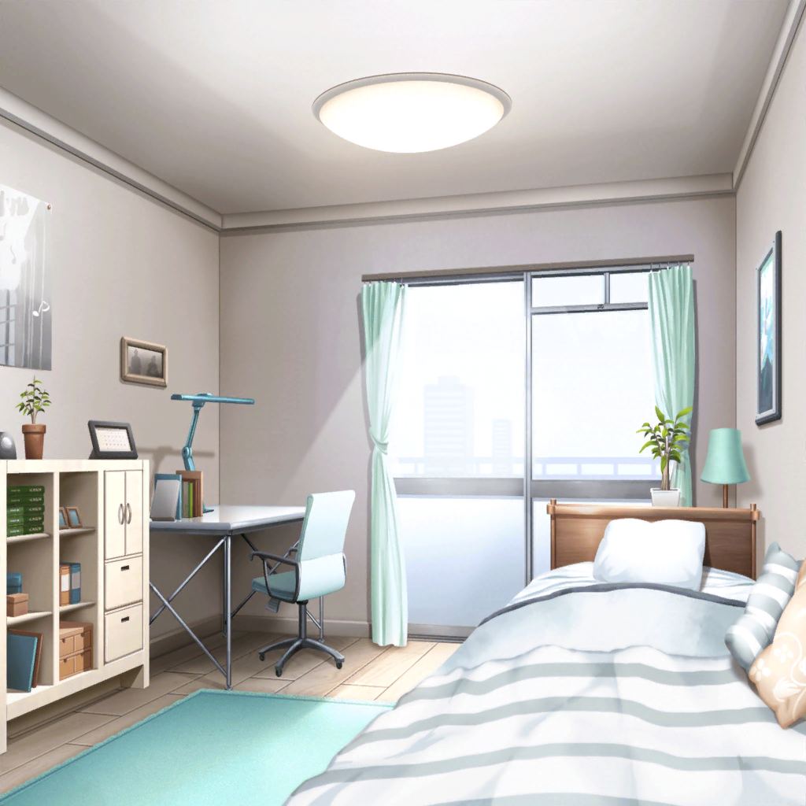

氷川家
日菜
それでね、この間授業中にね……
紗夜
（『日菜とまっすぐ話せますように』……そう短冊に
願った日から……）
紗夜
（……少しずつ、日菜との時間が増えてきたように思う）
紗夜
（日菜と過ごす時間も、そんなに悪いものではない。
それに、会話することで新しい発見もある）
日菜
おねーちゃん、今、話聞いてなかったでしょ！
紗夜
……え？
日菜
おねーちゃんは、『考え事モード』になるとピタっとして、
んーってなるんだよね。だからすぐわかるよ！
紗夜
ピタっと……？
私、またそんな瞬きが減っていたかしら？
日菜
そーだよ〜！
もう、話聞いてよー！
紗夜
（……少しだけ、日菜の言う擬音が何をさしているのか、
わかってきたような気がするわ）
日菜
……ま、いーや。ねえねえ、今日さ、
テレビでパスパレのライブが放送されるんだよ！
一緒に見ようよ！
紗夜
えっ……？
日菜
この間やったライブが、テレビで一部だけ放送されるんだって！
ま、ローカル局だけど！ おねーちゃん、一緒に見ようよ！
紗夜
（……思えば日菜の演奏、ほとんど見たことがないわね。
いえ、見たことがないというより……）
日菜
……ダメ？ おねーちゃん、忙しい？
紗夜
いえ、今日は生徒会の仕事も済ませてきているから時間はあるわ
紗夜
（見ないようにしていただけ。でも、これからは少しずつ
変わっていかなければ……）
日菜
やったー！ あと５分くらいではじまるから、
あたし飲み物用意してくるねーっ！
５分後
日菜
あっ！ はじまった！！ わあーっ、すごいお客さん！
こうやって見ると、すっごいなあ〜！
紗夜
日菜、少し落ち着きなさい
日菜
だってだって！ お客さんから見たら、あたし達って
こんな風に見えてたんだなーって思って！
あ！ 演奏はじまった！
紗夜
もう、日菜ってば……
日菜
この時さー、すっごく照明がギラッギラだったんだ！
まぶしいし、暑いしで大変だったんだー。
それにね、彩ちゃんが……
紗夜
……
紗夜
（日菜の演奏……技術はやはり高いわね……
けれど、テンポが走りがちだし、主張が強い演奏ね）
日菜
あっ、ほらほら！ 次はあたしのギターソロだよっ！
紗夜
（でも……）
紗夜
（すごく、楽しそうな音をしている……
日菜の表情、それに、はやるメロディーさえ……）
紗夜
……
日菜
おねーちゃん？ 大丈夫？
紗夜
……！ ごめんなさい。私、また……
日菜
うん。考え事？
紗夜
いえ、大丈夫よ。大丈夫……

紗夜の部屋
紗夜
……
紗夜
（日菜に真似されたくない。負けたくない……その一心で私は
技術を高めてきたのに……）
紗夜
（日菜の音は技術力だけじゃない、魅力的な音をしていた。
テンポが走っていることさえ、彼女の個性のように感じた）
紗夜
（……私の音は？
私の音は、日菜と比べて、どんな音をしているの……？）